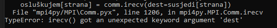

A piše u onoj obavijesti za labos offline provjera pa oni to valjda sami provjeravaju bez odgovaranja
Smolaa scimalo me jer sam prije par min vidjela u kalendaru da mi je bio termin danas u pclab haha hvala 🙂
Ziher mozes malo pojasniti sto znaci flushati output? isto sam u c++ i ne ispisuje mi nista na terminal sve dok svi procesi ne zavrse.
Skaxen samo dodaj << std::flush na svaki std::cout koji imaš
Smolaa ili https://www.tutorialspoint.com/c_standard_library/c_function_fflush.htm
Smolaa imas ideju kako za c? fflush(stdout) nakon svakog printfa mi ne pomaze…
jel imao netko problema u pythonu u smislu kada je beskonačna petlja da se ništa ne ispisuje doslovno nikad, a kada ograničim da svaki filozof jede npr. 5 puta, onda sve normalno radi?
Ruleta probaj dodat flush u ispis isti problem vjerojatno kao i kolega gore
Smolaa hvalaa!
 Jel zna netko kako rješiti ovaj error?
Maglica ja u py3 koristim comm.recv() bez “ i ”
koliko filozof/proces treba mislis odnosno jesti sekundi? mora li to biti random ili mozemo hardkodirat?
moukie nvm, treba bit nasumicno 🤦♂️
kako trebamo imenovati .zip koji predajemo na ferka?
dammitimmad nije nigdje definirano, al ja sam stavio 1-lab_ime-prezime_JMBAG
1-lab_ime-prezime_JMBAG
someone7 Ako ti flush ne pomaže onda valjda negdje kod zapinje. Ovaj flush samo natjera da se odma ispiše.
Smolaa u pravu si 🙂
Trebamo zakljucati predaju ili?
Je li se zna kako ce se ovo bodovat, tj. oce li bit ikakav termin (online ili offline)?
a_ko_si_ti pogleda sam zadnje predavanje do kraja, i čini se da će ocijeniti offline, a po potrebi se javit ekipi s kojom bi htjeli porazgovarat.
moukie sjećaš se kako si popravio?
MsBrightside Ja nakon printa-a pozovem sys.stdout.flush() i radi. Napravio sam pomoćnu print_mpi() wrapper funkciju gdje zovem print sa tekstom iz argumenta i pozivam sys.stdout.flush() kako ne bi morao svaki put pozivati u glavnom kodu.
MsBrightside mislim da sam napravio neki wrapper oko ispisa koj mi je izgledao ovako
omotac: ispis() flush()
cini mi se da je u tome bila caka, da se nije flushao output, ali proslo je od toga hahah